- 3押して、照らして、うっとり。大特集スキンのライトアップ大研究
- 4ずっと言われてた、あれが来た！Windowsにも上陸
- 5ちいさいけど、うれしいAPATTかわら版
- 6新作ゲーム情報AiPoS(アイポス)
- 7生みの親に聞いてきた作者に突撃インタビュー
- 8コーヒーブレイクでしょうぎ大会
- 9作業のあいまに、ひと休みコーヒーブレイクのすすめ
- 10キミの声をまってるぞおたより・次号予告
ノブに光が落ちると、いつもの画面がちょっとした舞台になる。夜の作業がたのしくなるぞ
気分が変わる‼︎
スキンの右下に、小さな電球がついた。押すと画面に明かりがともる。照らし方は三つ。部屋ぜんたいをふわっと明るくするAMBIENT、ふちを光らせるEDGE、ノブをねらって照らすSPOT。濃さも好きなだけ変えられるのだ。
電球を押す光がつく・消える
右クリックで照らし方AMBIENT・EDGE・SPOT
ポインターが小さなライトにマウスを動かすと光もついてくる
照らしてみましょう
左の画面の上でマウスや指を動かしてみよう。ほんもののAPATTで、ポインターを一つずつ置いて撮った光だぞ
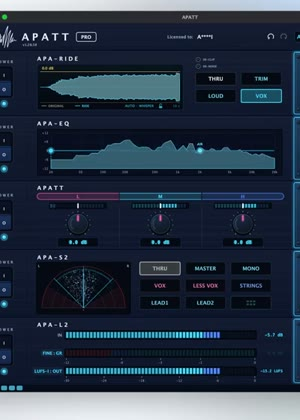
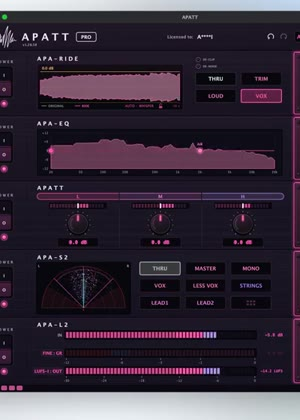
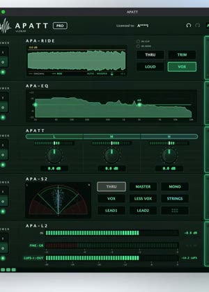
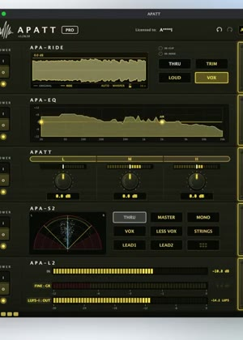
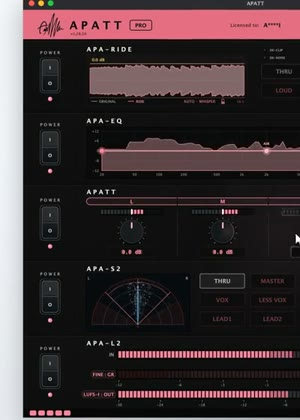
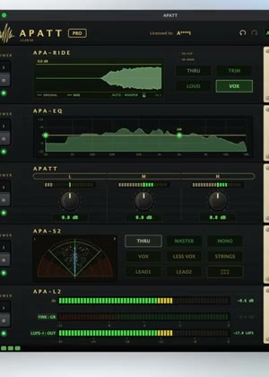
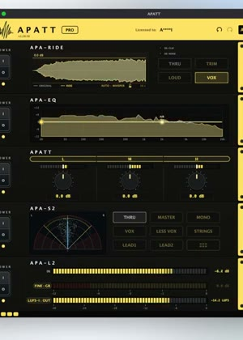
CYBER TOKYOはB・P・R・G・Yの5色。無料版のAPATT FREEでも使えるぞ！
でも
OK‼︎
にも上陸‼︎
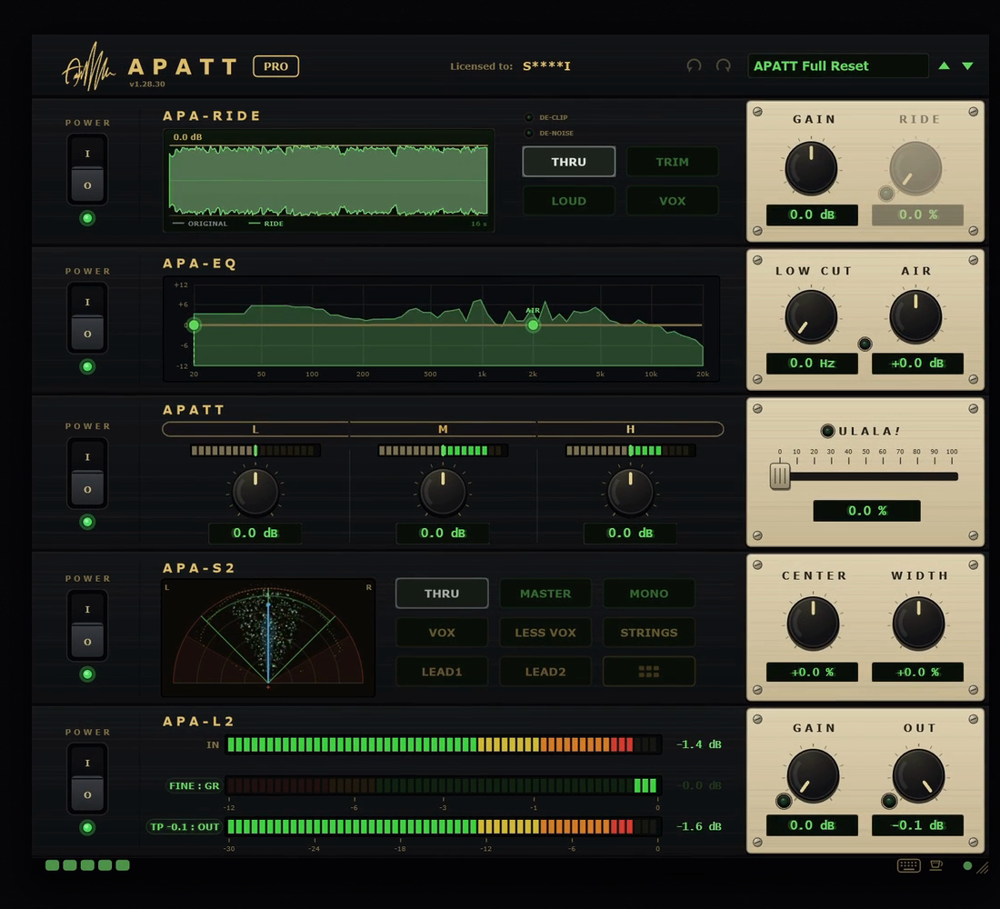
- VST3・Windows 10/11 64bit
- ライセンスはMacと共通
- 自分のコンピュータ3台まで
Macで買った人も、同じキーでWindowsで使える。家はMac、スタジオはWindows、なんて人にうれしい
Windows版の購入ページへ ▶APATTかわら版
VOX→RIDEの自動バトンタッチ
VOXで声を整えたら、GAIN、RIDEへと自動で手渡し。ボタンを押しかえる手間がなくなった。
Pro Toolsで動く！
AAXに対応。Pro ToolsのユーザーもAPATTをそのまま使える。
比べるのは一瞬
左上のPRO/ARTISTの札を押すと、原音とAPATTをすぐに行き来できる。
HI CUT
AIRを下げていくとHI CUTに。シャリっとした所を、すっとおさえられる。
最新版は、買った時のメールのリンクか、FastSpringのアカウントから(買った時のメールアドレスを入れてね)
5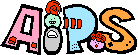
ひとり立ち‼︎
ゲームアプリとして単独デビュー
すくい出せ‼︎
これまではAPATTの☕の中でしか会えなかったアイポスが、10月31日、ついにiPhoneのアプリとしてひとり立ちする。ルールはかんたん。左上に出ている子と同じ子を見つけて、指でタップ。テンポよく続ければチェインがつながり、星にさわればフィーバータイムだ。ピクト姫と8人のなかまが、全256面でキミを待っている。
タイム
だ‼︎
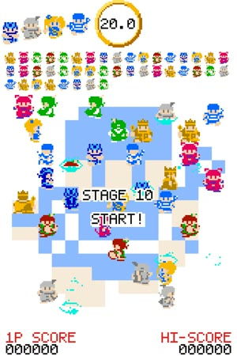
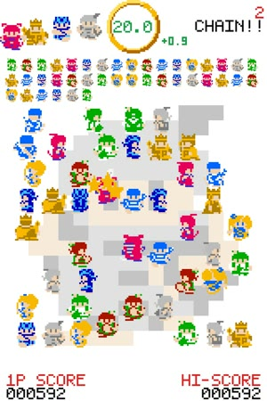
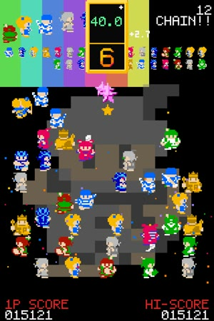
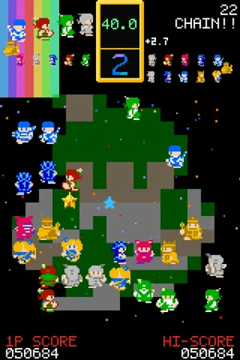
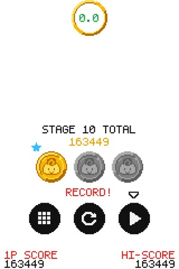
作者に突撃インタビュー
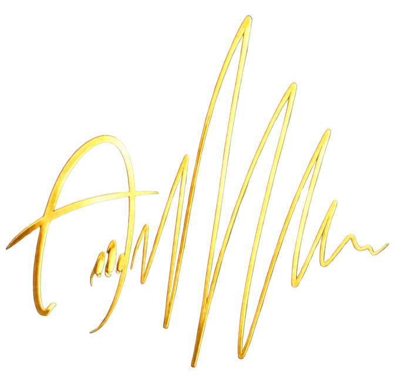
7しょうぶ
盤をかこんで大会だ！
APATTの☕を押すと、コーヒーブレイクのはじまり。AiPoSのほかに、しょうぎも遊べる。はがきを受け取ってトーナメントに参加すると、ルーレットで相手が決まり、見物の子たちがぞろぞろ集まってくる。勝てば優勝インタビューまであるのだ。
ひと勝負‼︎
駒は漢字のまま。将棋を知っている人なら、すぐに指せるぞ
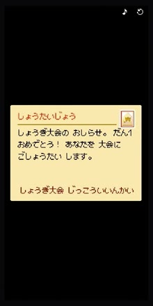
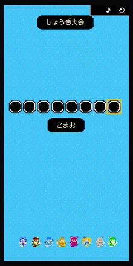
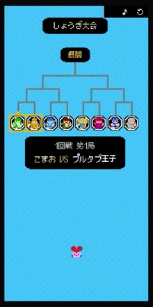
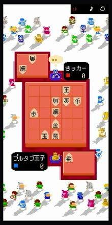
のすすめ
ひと休み‼︎
音を作っていると、耳はだんだん慣れてしまう。同じところを何度も聴くうちに、いいのか悪いのか、わからなくなることもある。そんな時は、いったん手を止めてひと息。APATTの☕を押すと、コーヒーブレイクのはじまりだ。アイポスで遊んだり、しょうぎを一局指したり。少し休んで戻ってくれば、耳はまた新しい気持ちで音を聴けるはず。がんばるキミのための、小さな休けい室なのだ。
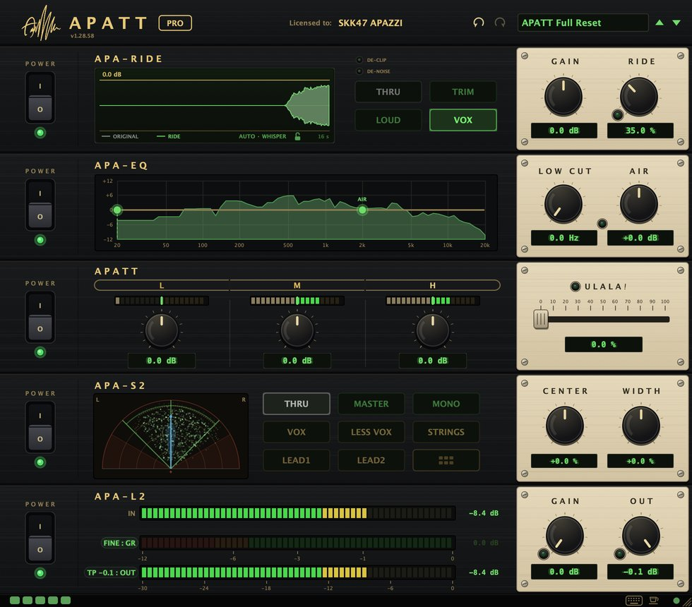
ココだ！
APATTの画面の右下、キーボードのマークのとなりにある、小さなカップ。これを押すとコーヒーブレイクのはじまりだ！
おたより大募集‼︎
こんな色のスキンがほしい、こんな使い方を見つけた、AiPoSで何面まで行った……。なんでも送ってね。次の号で紹介するかも！？
おたよりを送る ✉押すとキミのメールのアプリが開くよ。あて先はapatt@kurashin.co
ハッシュタグ #APATT通信 をつけてポストしてね！
次号予告
何が出るかは、まだヒミツ。おたのしみに！
APATT通信 No.1(創刊号)2026年10月 発行・APAZZI ／ APATTの最新情報は APATTのサイト と X で。
この通信は、APATTを使ってくれている人に送っています。